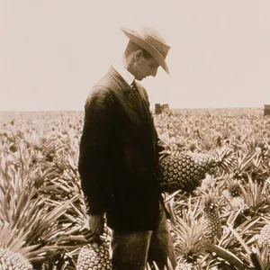
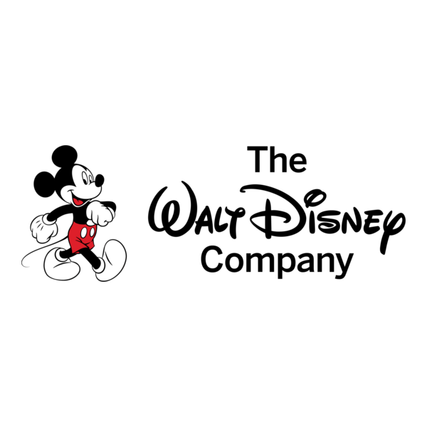
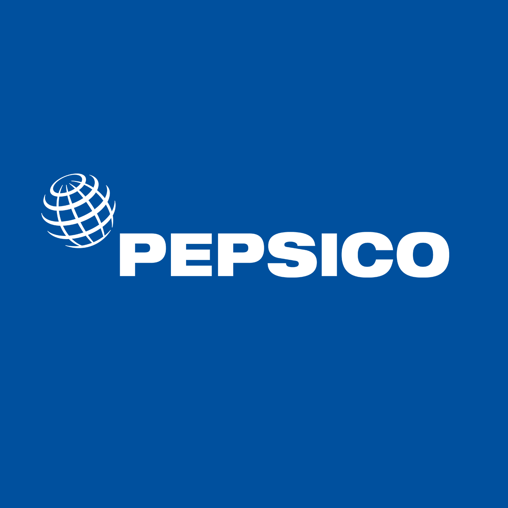

DFC  لتجارة الفواكه العالمية
لتجارة الفواكه العالمية
نربط بين المزارعين والمستثمرين حول العالم منذ 1899
من نحن!
شركة رائدة في تجارة الفواكه العالمية، نعمل كحلقة وصل بين المزارعين المحليين والمستثمرين الدوليين. نضمن جودة المنتج من الشجرة حتى المستهلك النهائي.
+15
دولة نتعامل معها
+200
نوع فاكهة مختلفة
+500
مزارع شريك
+50M
دولار حجم تداول سنوي
رؤيتنا
أن نكون الجسر الأكثر كفاءة بين منتجي الفواكة والمستثمرين العالميين، مع الحفاظ على أعلى معايير الجودة والاستدامة.
رسالتنا
توفير منصة شفافة وعادلة لجميع الأطراف، مع تحسين سلسلة التوريد لتقديم أفضل المنتجات بأفضل الأسعار.
شركة دول للأغذية

جيمس دول
تأسست شركة Dole Food Company في عام 1851 في هاواي على يد صموئيل نورثروب كاسل وأموس ستار كوك تحت اسم Castle & Cooke. بدأت الشركة كشركة تجارية عامة، ثم تحولت لاحقًا إلى التركيز على زراعة وتوزيع الفواكه والخضروات، خاصة الموز والأناناس، تحت اسم Dole الذي أصبح العلامة التجارية الرئيسية للشركة. في عام 1899، أصبح جيمس دراموند دول، الذي يُعتبر "أبو صناعة الأناناس"، جزءًا من الشركة، مما ساهم في نموها الكبير في هذا القطاع.
شركاؤنا

